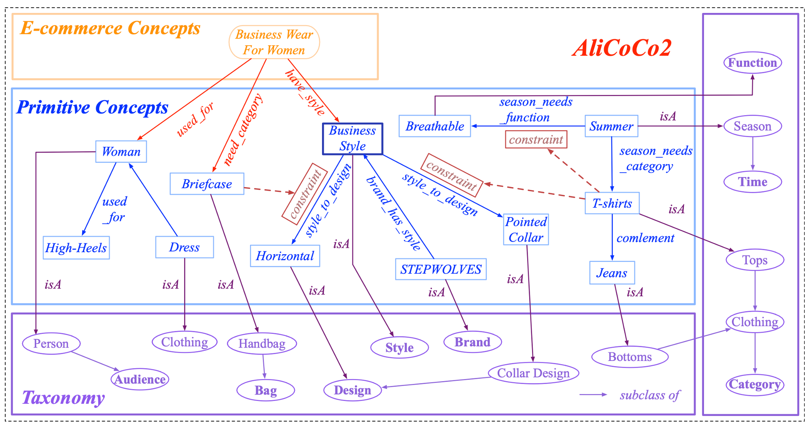
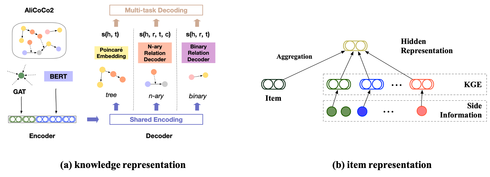

1. Commonsense Causal Reasoning between Short Texts
CausalNet
CausalNet consists of a large amount of causal relationships extracted from Bing web pages.
Each causal relationship is a triple as following: CAUSE_WORD[\t]EFFECT_WORD[\t]FREQUENCY
You can download CausalNet from here.
Publications
Please cite the following paper if you are using CausalNet and the code. Thanks!
Zhiyi Luo, Yuchen Sha, Kenny Q. Zhu, Seung-won Hwang, Zhongyuan Wang, “Commonsense Causal Reasoning between Short Texts”,
Proc. of 15th Int. Conf. on Principles of Knowledge Representation and Reasonging (KR’2016), Cape Town, South Africa.
2. AliCoCo2: Commonsense Knowledge Extraction, Representation and Application in E-commerce
Overview of AliCoCo2

Representation

|